セットアップ
ailia DX Insight 1.0から1.1へのアップデートがまだの方はこちらをご確認ください。
ダウンロード
ailia DX Insightをダウンロードして、zipを解凍します。
インストーラの起動
Windowsの場合は、aillia_dx_insight.msixをダブルクリックしてインストーラを起動します。 macOSの場合は、ailia_dx_insight.dmgを右クリックして開くで起動します。
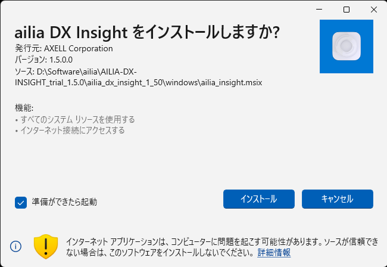
利用規約への同意
ailia DX Insightのご利用には利用規約への同意が必要となります。初回起動時に表示される利用規約を確認し、問題がなければ同意するを選択してください。
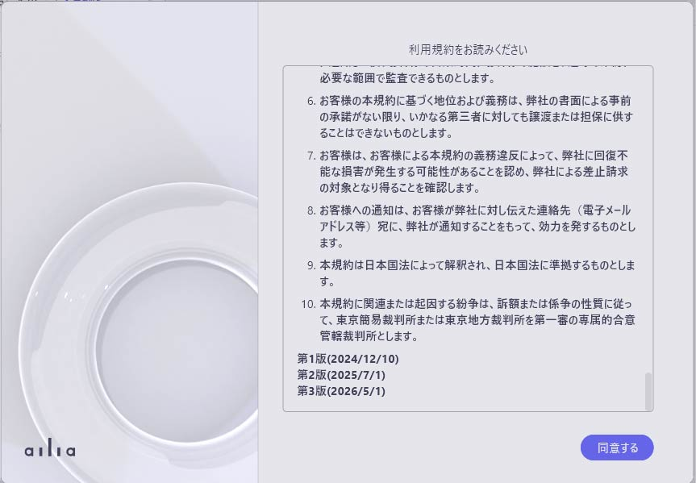
チュートリアルを開始
利用契約に同意すると、チュートリアルが開始されます。
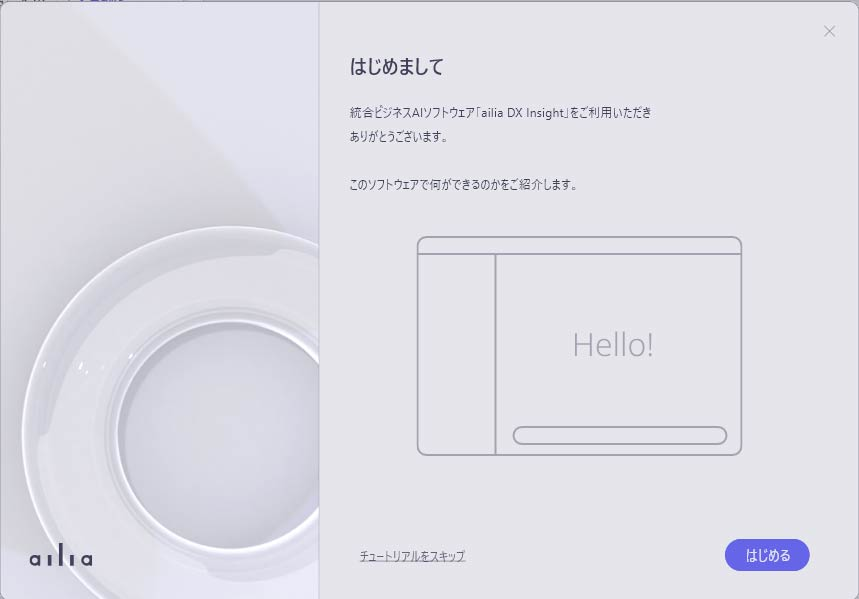
チュートリアルの最終画面にて、OpenAI APIキーの設定が可能です。OpenAIのAPIキーを入力しなくてもailia DX InsightはオンデバイスAIモデル等で利用することができます。
OpenAI APIキーの設定
ChatGPTを利用する場合は、OpenAIのWEBページでアカウント登録を行い、OpenAIのAPIキーを取得します。
チュートリアルから設定する場合
- チュートリアルの最後、「APIキーの設定」まで進みます。
- 「OpenAI APIキー」の下にあるテキストボックスに、"sk-"から始まるOpenAI APIキーを入力します。
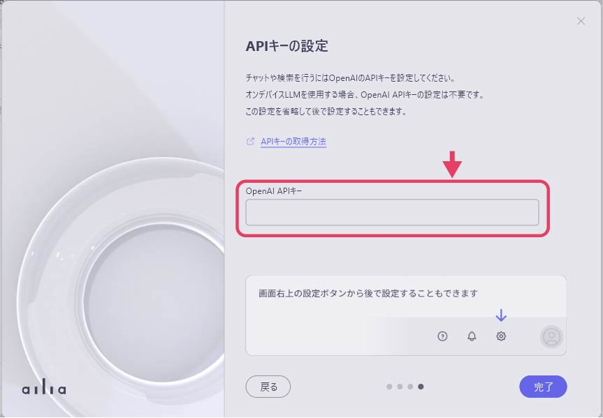
- 「完了」ボタンを押します。
設定画面から設定する場合
- 画面右上にある歯車アイコンを押します。
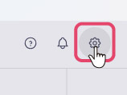
- 「チャットAI」の項目内にある、「APIキー」から、「今すぐ設定する」を選択します。
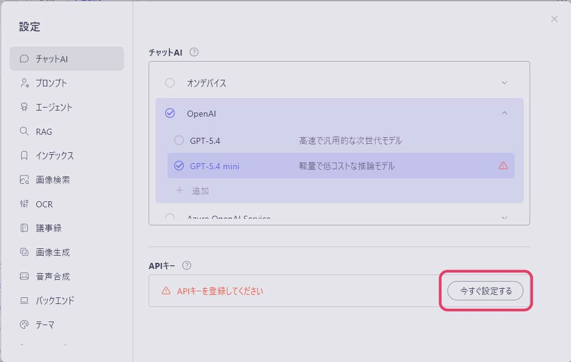
- 表示されたダイアログ内のテキストボックスに、"sk-"から始まるOpenAIのAPIキーを入力します。
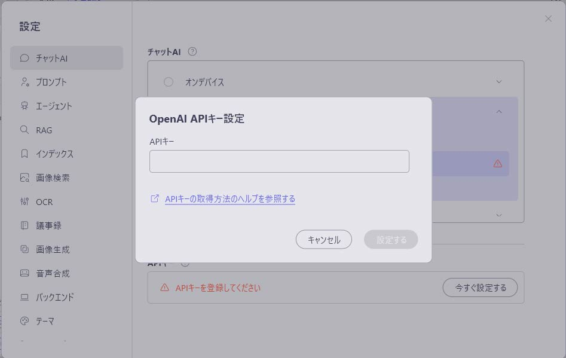
- 入力後、「設定する」を選択して設定を完了します。
AIモデルのダウンロード
初回起動時のチュートリアルの終了後、AIモデルのダウンロードが開始されます。 ダウンロードの進捗は左のサイドバー下部にて確認できます。
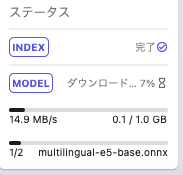
ダウンロード完了後、ailia DX Insightが使用可能となります。
OpenAIモデルの選択
- ailia DX insightの画面にて、右上の歯車アイコンをクリックして設定ウィンドウを表示させます。
- 「チャットAI」の項目の中にある「OpenAI」をクリックし、モデルを選択します。
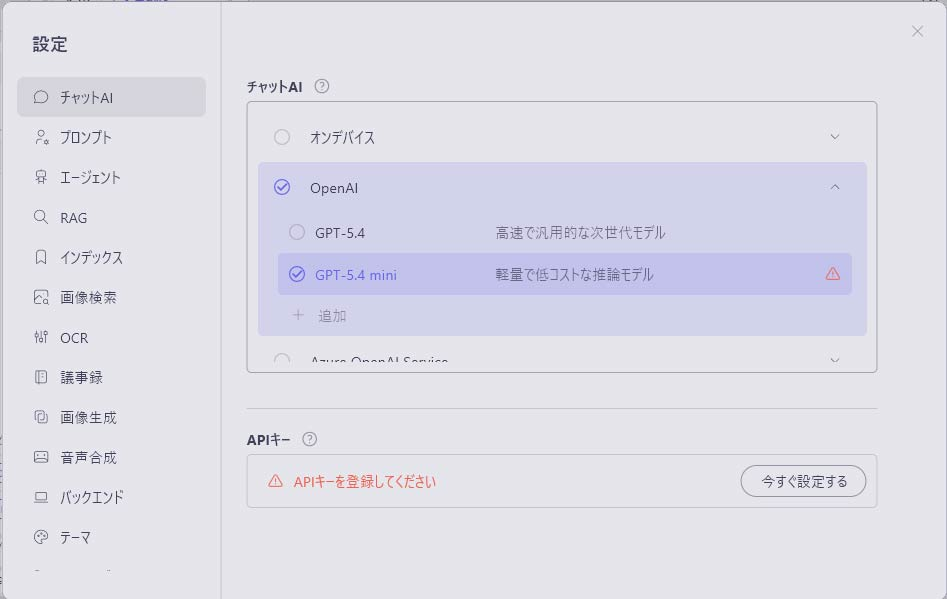
※OpenAIがAPIでアクセスできるようにしているモデルであれば、モデル一覧の中になくとも追加することができます。
OpenAIのモデル一覧の一番下にある「+追加」を選択し、モデル名/最大トークン長/説明(任意)を入力し、「完了」を押してモデルを追加してください。
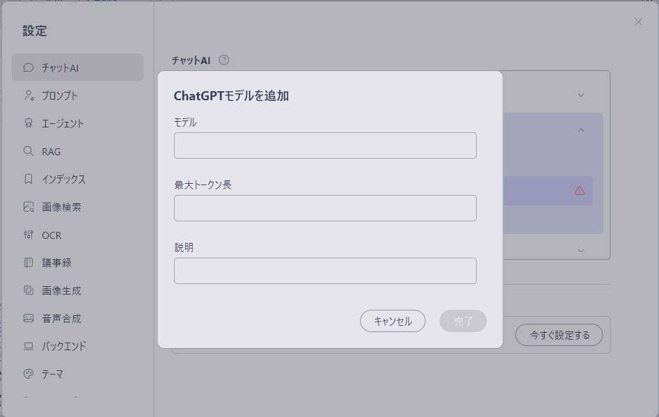
カラーテーマの変更
ailia DX Insightの設定の中にある「テーマ」からカラーテーマを「ライト」「ダーク」で切り替えることができます。
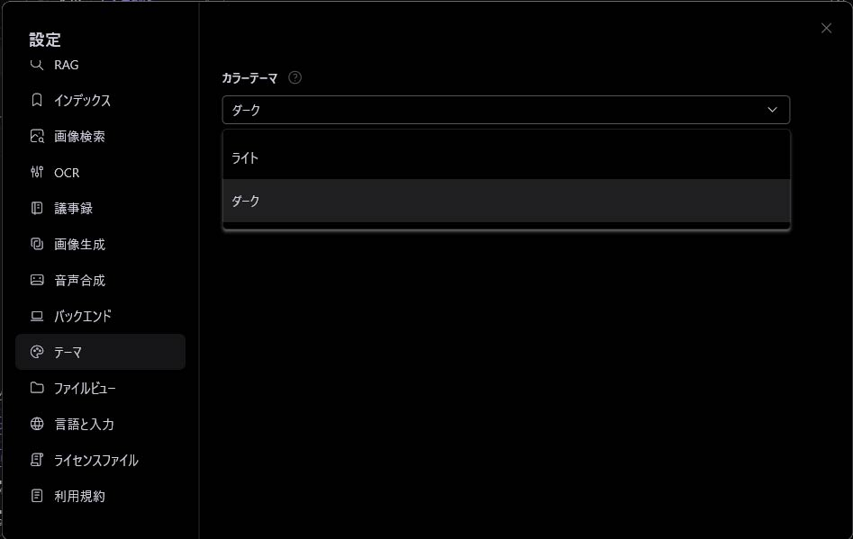
※カラーテーマをダークにしている場合は、AIで生成された回答を範囲選択後、右クリックを押下すると、コンテキストメニューが白く表示されてしまいます。
カラーテーマをダークにしている場合にAI回答欄をコピーしたい場合は回答欄の右側にある「コピー」を押下してください。
（コードをコピーする場合はコードの欄にあるコピーのアイコンを押下してください）
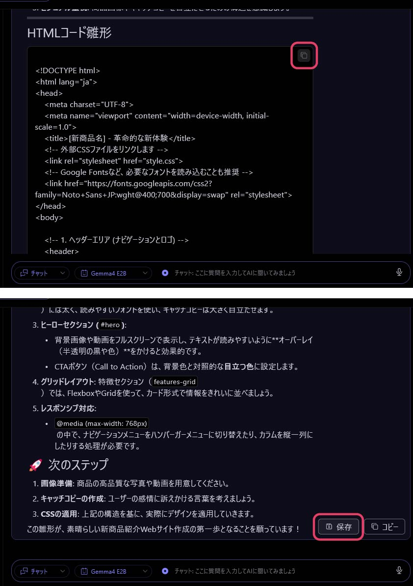